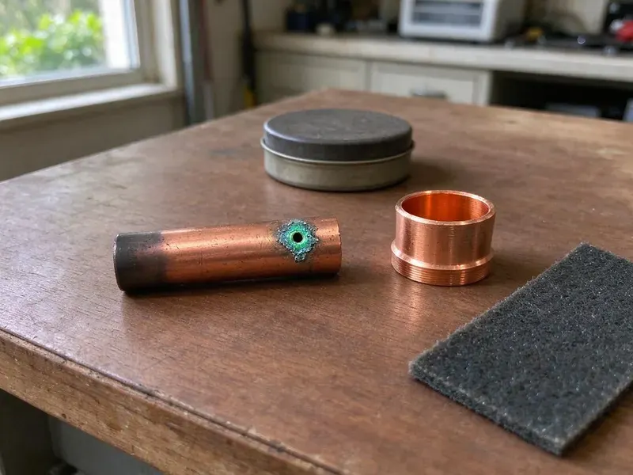

Septic Tank Repair in Huntington, WV
Slow drains, sewage odors or soggy ground over the leach field? GJK Plumbing repairs septic systems in Huntington, WV and gets them working right.
- Fast Septic Backup Response
- Upfront Pricing
- Licensed West Virginia Plumbers
- Experienced Local Technicians
Need Septic Tank Repair Today in Huntington, WV?
We inspect the tank, lines and field, then quote a flat price before repairs.
Septic Tank Repair in Huntington, WV for Tanks, Pumps, Lines and Leach Fields
GJK Plumbing specializes in all aspects of septic tank repair for homes throughout Huntington, WV. From diagnosing mysterious odors to fixing major backups, our certified plumbers have the tools and training to get your system running smoothly again.
Our expertise includes:
- Drain field repair and replacement expertise.
- Effluent pump, float switch and high water alarm service
- Finding and repairing septic tank leaks.

Additional Plumbing Repair Services in Huntington, WV
We offer expert plumbing repair services across Huntington, WV to stop leaks, clear blockages, and keep every fixture working the way it should.


Customers
Why Choose GJK Plumbing for Septic Tank Repair in Huntington, WV?
Not every septic backup means a failed leach field. We check the tank, baffles, filter and lines first so you only pay for what is needed.
- Code Compliance, All septic tank repairs are performed strictly to West Virginia plumbing codes and local Huntington regulations, ensuring safety and legality.
- Advanced Tools, We use modern diagnostic equipment, like sewer cameras and hydro-jetting, to accurately pinpoint and clear septic line blockages without extensive excavation.
- Permit Savvy, We coordinate with local environmental health officials when a repair requires approval.
Citywide Coverage
No matter where you are located within Huntington, our skilled team is available to provide prompt and professional septic tank repair services. We cover the entire area so no homeowner is left with a broken system.
Experienced Team
Our septic crew has years of experience with concrete and plastic tanks, gravity and pumped systems and alternative treatment units. They know how to work around rock and compacted ground.
Safety-First Approach
Septic tanks hold harmful gases and bacteria, so we never enter a tank and we use proper ventilation and protective gear. Open tanks are covered or guarded at all times while we are on site.
Trusted Certified Huntington Plumbing Services Professionals
At GJK Plumbing, we take pride in providing certified plumbing services throughout Huntington, WV. Backed by recognized industry credentials, our experienced plumbers combine technical skill with genuine customer care. Whether it is repair, installation, or maintenance, we follow strict safety and quality standards to deliver lasting results you can trust.
Call Us Now PHCC Plumbing Contractor Recognition
PHCC Plumbing Contractor Recognition Better Business Bureau (BBB) Accreditation
Better Business Bureau (BBB) Accreditation Angi Certified Pro
Angi Certified Pro ISO 9001 Quality Management Certification
ISO 9001 Quality Management CertificationReliable Septic Tank Repair Services in Huntington, WV
Septic Repair Cost Comparison in Huntington, WV
Baffle or tee replacement often costs $300 to $900, and effluent pump replacement typically runs $900 to $2,000. Inlet line repairs range from $800 to $3,000 depending on depth and length. Leach field restoration or replacement can cost $5,000 to $20,000 or more. We help you choose the option that fixes the problem at the best long-term cost.

Preventative Septic Maintenance & Repair in Huntington
Many septic tank issues can be prevented with regular maintenance. GJK Plumbing offers routine inspections and preventative repairs to catch small problems before they turn into costly emergencies. This includes checking sludge levels, inspecting pipes for leaks or damage and advising on proper septic system care suited to the climate and usage patterns common in Huntington.
Septic Tank Lid and Riser Repair in Huntington
Cracked or deteriorated concrete lids are a real safety hazard. We replace failing lids and install risers that bring access up to grade. Risers make pumping and inspection faster and cheaper over time. Secure, child-resistant lids are standard on our installs.
Cost-Effective Septic Tank Repair in Huntington, WV
The cost of septic tank repair is a major concern for homeowners in Huntington, WV. GJK Plumbing provides clear, upfront pricing after a thorough diagnosis, so you know exactly what to expect. We focus on providing the most cost-effective solution without compromising quality, often offering repair options that extend the life of your existing system rather than pushing for early replacement, saving you money in the long run.
Alternative Septic System Repair in Huntington, WV
Some properties use aerobic treatment units or other alternative systems because of soil or lot size limits. These systems have air pumps, timers and alarms that need routine service. We repair aerators, replace diffusers and troubleshoot control panels. We also help keep maintenance records required by your permit.
Septic Pump and Alarm System Repair in Huntington
Many modern septic systems, especially those on sloped properties or with advanced treatment units, depend on a working septic pump and alarm. When your pump fails or the alarm sounds, it signals a serious issue. Our team can repair or replace faulty pumps, floats and electrical components so your system reliably moves wastewater to the drain field. We service all major pump brands for homes in Huntington.
Effluent Pump Repair in Huntington, WV
Homes with uphill or distant fields often use an effluent pump in a pump tank. Failed pumps, stuck floats or tripped breakers set off high water alarms. We test the pump, float switches and control panel and replace failed parts. A working alarm gives you warning before sewage backs up.

Commercial Septic System Repair in Huntington, WV
Commercial properties often have larger, more complex septic systems that demand specific repair knowledge. GJK Plumbing provides full septic tank repair for businesses throughout Huntington, WV, understanding the challenges of high-volume usage and mixed waste streams. We make sure your commercial septic system operates efficiently, preventing costly downtime and maintaining compliance with health regulations.
Septic Tank Repair Near Me in Huntington, WV
When you search for 'septic tank repair near me' in Huntington, WV, you want a local expert who understands your community and can respond fast. GJK Plumbing is rooted in the West Virginia region, providing personal service that larger companies can't match. We pride ourselves on being your neighborhood plumbing solution.
We are deeply familiar with the homes and properties in and around Huntington, understanding the challenges septic systems face here. This local knowledge ensures we provide the most effective and efficient septic tank repair solutions.
GJK Plumbing at a Glance
- Fully licensed plumbing team covering Huntington, WV
- 24/7 emergency service with same-day scheduling
- Upfront, flat-rate pricing before work begins
- 4.8-star rated by 832+ West Virginia customers
Huntington Map
Huntington Information
- Population
- 45,325
- Area codes
- 304/681/606
- Service area
- Huntington and communities within 40 miles
- Nearby
- Pea Ridge, Hurricane, Teays Valley, St. Albans
Rocky, steep terrain is common across West Virginia, and many homes sit on hillsides where drainage and slope movement affect buried lines. Effective septic tank repair is key for homes in Huntington, WV, where soil and weather both affect how well a system performs.
Expert Services
Trust our professionals for reliable GJK Plumbing solutions in Huntington, WV.
Our Specialized Plumbing Services in Huntington, WV
At GJK Plumbing, we provide a complete range of plumbing services across Huntington, WV. From leak detection to full system installations, our team ensures fast, precise, and affordable service for both residential and commercial properties. Explore our core services below:


How Our Septic Tank Repair Process Works in Huntington, WV
At GJK Plumbing, we follow a clear and efficient process so your septic tank repair in Huntington, WV is handled professionally and effectively.
Request a Quote
Contact us at (681) 223-3607 to schedule your septic tank repair service. Our friendly team will gather initial information about your issue and set up an appointment.
Diagnosis & Estimate
A licensed GJK Plumbing technician will arrive to thoroughly inspect your septic system, diagnose the problem and provide a detailed, upfront repair estimate.
Expert Repair
Upon your approval, our plumber will complete the septic tank repair using specialized tools and techniques, ensuring a durable and code-compliant solution.
Frequently Asked Questions About Septic Tank Repair in Huntington
Septic tank repair costs in Huntington, WV vary widely depending on the issue. Minor repairs like clearing a clog might range from $300 to $700, while major repairs such as drain field replacement can cost $5,000 to $15,000 or more. We provide a detailed estimate after finding the problem.
Watch for slow drains, gurgling pipes, sewage odors, high water alarms, wet spots over the field or sewage backing up into tubs. Any of these warrants a prompt inspection.
To extend your septic system's life, keep up regular pumping every 3 to 5 years, avoid flushing non-biodegradable items, limit harsh chemical use, conserve water and keep vehicles off the drain field. Regular inspections by GJK Plumbing can also catch small issues before they become bigger problems.
Many households need pumping every three to five years, depending on tank size and household use. Regular pumping protects the leach field from buildup.
GJK Plumbing stands behind the quality of our septic tank repair services with a solid warranty on parts and labor. We will provide full warranty details for your particular repair during the initial consultation, giving you peace of mind.
Homeowners should not open or enter septic tanks because of toxic gases. Repairs involving tanks, pumps and fields are best done by a professional with the right equipment.
Soil type has a major effect on septic system performance. Rocky, steep terrain is common across West Virginia, and many homes sit on hillsides where drainage and slope movement affect buried lines. Clay soils drain slowly, making drain fields more prone to failure, while very sandy or rocky ground can pass effluent too quickly. Our plumbers understand these local soil challenges.
For minor repairs like baffle replacement, a permit may not be required. Significant repairs that involve excavation, major pipe replacement or any work on the drain field typically require permits from the local health department or building authority in Huntington, WV. GJK Plumbing will help you work through the permitting process and make sure all work is compliant.
What People Are Saying About Our Plumbing Experts?

Daniel K.
A pipe burst at 11 pm and they actually answered. The plumber showed up within the hour, shut everything down, and had us back to normal the next morning. Could not ask for more.
Emergency Plumbing · Nitro, WV
Emily R.
I called GJK Plumbing for plumbing repair, and the technician was fast, polite, and thorough. They explained the problem clearly and fixed it the same day. I will definitely hire them again. Highly recommended!
Plumbing Repair · Huntington, WV
Sofia M.
Two new toilets installed in one visit, no mess left behind, and the tech even adjusted a faucet he noticed was dripping. Fair pricing and really friendly.
Toilet Installation · Hurricane, WVLaura S.
I scheduled a water heater replacement, and the team made the process smooth and affordable. The new unit works perfectly, and they cleaned up after completing the job.
Water Heater Replacement · Huntington, WV
Mark T.
When our office needed drain cleaning, GJK Plumbing provided quick, reliable service. The plumber arrived on time and made sure every drain flowed perfectly before leaving. Very satisfied.
Drain Cleaning · Nitro, WV
James P.
Our commercial plumbing system had a leak under the sink, and GJK Plumbing handled it professionally. The plumbers arrived quickly and restored everything without disruption to our customers.
Commercial Plumbing · Huntington, WV